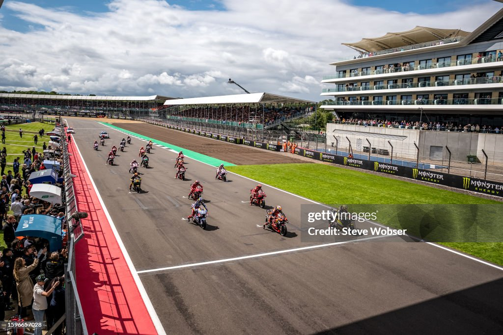

Información del circuito
Nombre: "Silverstone Circuit"
Longitud: 5.901 metros
Anchura: 15 metros
Fecha: 2025-05-25
Hora: 14:00:00
Número de vueltas: 20
Localidad: Silverstone
País: Reino Unido
Patrocinador: Tissot
Galería de fotos



Galería de videos
Vencedor de la carrera
Marco Bezzecchi — Tiempo: PT38M16.037S
Clasificación Mundial
| Posición | Piloto | Puntos |
|---|---|---|
| 1 | Marc Marquez | 251 |
| 2 | Alex Marquez | 198 |
| 3 | Francesco Bagnaia | 172 |